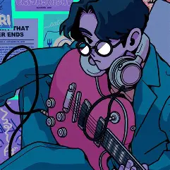

เกม
เป็นกิจกรรมที่ผมทำบ่อยที่สุดในชีวิตแล้ว นอกจากนอน(เผลอๆมากกว่า) อีกทั้งยังเป็นทั้งความฝันและความหวังที่ทำให้ยังมีความตั้งใจใช้ชีวิตต่อไปด้วย ผมเล่นเกมได้ทุกแนวแต่ที่ชอบที่สุดน่าจะเป็นแนว Turn-base
เป็นกิจกรรมที่ผมทำบ่อยที่สุดในชีวิตแล้ว นอกจากนอน(เผลอๆมากกว่า) อีกทั้งยังเป็นทั้งความฝันและความหวังที่ทำให้ยังมีความตั้งใจใช้ชีวิตต่อไปด้วย ผมเล่นเกมได้ทุกแนวแต่ที่ชอบที่สุดน่าจะเป็นแนว Turn-base
อนิเมะ
ส่วนตัวผมดูพอประมารไม่ได้มากไม่ได้น้อย เป็นกิจกรรมไว้ตอนเบื่อๆจากการเล่นเกม หรือทำงานช่วยผ่อนคลาย ไม่มีแนวที่ดูเป็นพิเศษเรื่องไหนสนุกก็ดูหมด
ส่วนตัวผมดูพอประมารไม่ได้มากไม่ได้น้อย เป็นกิจกรรมไว้ตอนเบื่อๆจากการเล่นเกม หรือทำงานช่วยผ่อนคลาย ไม่มีแนวที่ดูเป็นพิเศษเรื่องไหนสนุกก็ดูหมด

เพลง
ส่วนใหญ่เพลงที่ผมฟังจะเป็นทางด้านของเพลงญี่ปุ่น และเพลงจากเกมต่างๆ ทั้งที่ผมไม่เคยเล่นและเคยเล่นแต่ทุกเพลงก็เป็นเพลงที่ดี การฟังเพลงยังช่วยให้สมองแล่นอีกด้วย
ส่วนใหญ่เพลงที่ผมฟังจะเป็นทางด้านของเพลงญี่ปุ่น และเพลงจากเกมต่างๆ ทั้งที่ผมไม่เคยเล่นและเคยเล่นแต่ทุกเพลงก็เป็นเพลงที่ดี การฟังเพลงยังช่วยให้สมองแล่นอีกด้วย
ASMR
ASMR ย่อมาจาก Autonomous Sensory Meridian Response แปลเป็นไทย ก็คือ “การตอบสนองทางประสาทสัมผัสที่ทำให้รู้สึกผ่อนคลาย” ช่วงนี้ผมฟังทุกวันเลยครับไม่ได้ฟัง เดี๋ยวนอนไม่หลับ
ASMR ย่อมาจาก Autonomous Sensory Meridian Response แปลเป็นไทย ก็คือ “การตอบสนองทางประสาทสัมผัสที่ทำให้รู้สึกผ่อนคลาย” ช่วงนี้ผมฟังทุกวันเลยครับไม่ได้ฟัง เดี๋ยวนอนไม่หลับ